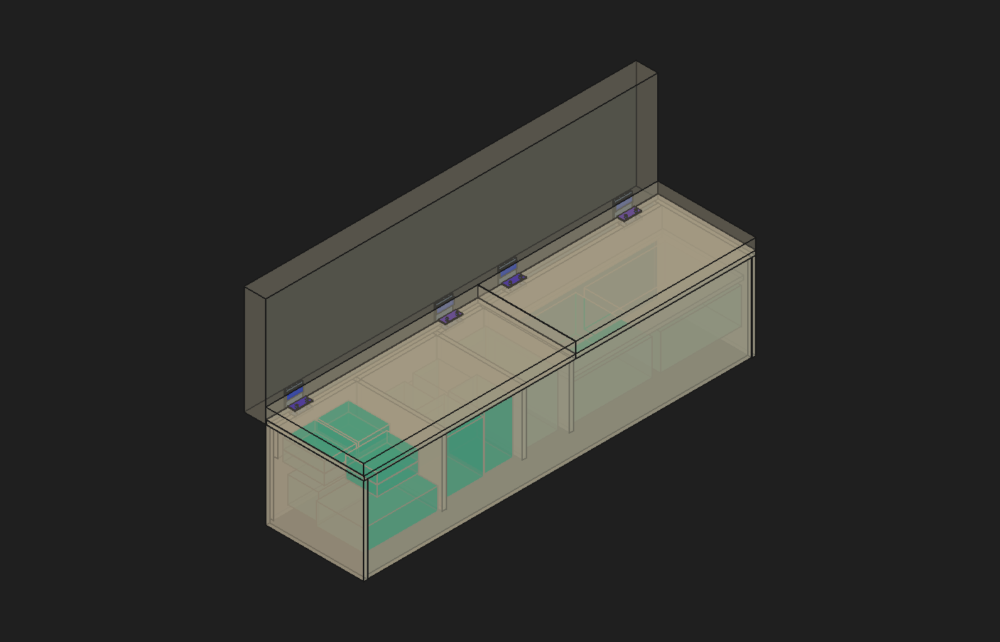

23/10/2026 · Estudo separado sobre a R45. Não substitui o modelo principal.
Abrir estudo FreeCAD · Cálculos e testes de armazenamento · Testes contra o corpo rebaixado · Conferência do fabricante

Azul: envelopes de abas, não CAD oficial Southco. As partes móveis permanecem fechadas na vista. O encosto transparente é apenas reserva geométrica: a estrutura da fixação não depende de atribuir resistência a ele.
Quatro posições longitudinais Y3890/4580 para a tampa de971mm e Y4870/5400 para a de825mm. Todas as cotas abaixo são em milímetros, nas coordenadas do projeto. Manter painéis971×448×20 e825×448×20, Z400–420.
| Componente | Dimensão e montagem proposta | O que preserva / falta conferir |
|---|---|---|
| Contraplatina móvel | 4 peças de aço26×80×10, X110–136 eZ390–400. Duas roscasM6 por peça, linhaX125, centrosY±23. | Fica na faixa já ocupada pelo apoio traseiro; não reduz os compartimentos. Exige quatro furos normais por tampa, sem afinar, recortar bordas ou mudar suas dimensões. |
| Alojamento no corpo | 27×81×10,5, apenas no fundo/sarrafo traseiro. Calço nominal0,5 no fundo do alojamento, sob a contraplatina fechada. | Rebaixo é no corpo, não na tampa. Calço restitui o apoio vertical fechado; tolerâncias, acabamento e apoio efetivo precisam ser acertados em fabricação. |
| Suporte fixo | Faixa de aço80×6, ligada à traseira do corpo; vista nominal recuada10 na parte superior, alojada dentro da reserva do encosto. | Não usa espuma como estrutura e não depende de ancoragem na parede. Exige detalhar dobra/união e compatibilizar encosto. Recuo10 é hipótese ajustável ao eixo real, não cota Southco confirmada. |
| Placa receptora fixa | 4 peças80×100×6, alojadas emX112–118 na traseira; quatro pontosM6 por suporte, linhasZ280/360 eY±23. | Porcas/roscas ficam contidas na madeira existente. A montagem deve anteceder o fechamento dos sarrafos. Não há porca saliente dentro do baú. |
| Parafusos móveis | 8M6×35 + arruelas1,6, como combinação dimensional proposta: aba4,5 + tampa20 + arruela1,6 deixam8,9 de engajamento na contraplatina10. | Restam1,1mm nominais antes da face inferior; conferir rosca útil, tolerância e ponta reais. Não constitui seleção comercial definitiva. |
| Parafusos do suporte ao corpo | 16M6 de montagem, receptores embutidos e folga cega para eventual ponta dentro do sarrafo. | Comprimento final, classe, acesso e torque de aperto pendentes. Não furar o interior por comprimento escolhido por aproximação. |
Se “não mexer nas tampas” significar também não fazer qualquer furo de fixação, esta proposta não atende: os parafusos passantes precisam de furos. O estudo preserva integralmente formato, espessura, posição e quantidade das duas tampas, mas não promete fixação sem furação.
Foram usados eixos hipotéticos emX100, Z420/425/430/435/440,3 nos testes de conteúdo e três alturas nos testes do corpo. Esses valores fazem uma sensibilidade dimensional, não substituem o eixo real. A passagem do cilindro Southco, dos parafusos, do batente e da almofada não foi aprovada por esses ensaios. A reserva externa do encosto ainda precisa alojar o suporte e permitir sua montagem.
A maior tampa usa, como pré-seleção, duas unidades12,4±2,5N·m; a menor, duas10,7±2,1N·m. São famíliasE6-10-6110F0/R0 eE6-10-695F0/R0, acabamento50. O sentido F0 é inferência da montagem estudada e deve ser confirmado na peça/CAD antes da compra; não substituir por códigos sem o zero, que têm torque diferente no outro sentido.
| Cenário | Tampa971 | Tampa825 |
|---|---|---|
| Painel a900kg/m³, sem afirmar material real | 7,830kg | 6,653kg |
| Momento máximo de peso na faixa de eixos | 17,51N·m | 14,88N·m |
| Torque mínimo do par | 19,8N·m | 17,2N·m |
| Reserva após orçamento hipotético de0,5kg metálicos móveis aaté60mm do eixo | 2,00N·m | 2,03N·m |
As duas contraplatinas somam0,327kg por tampa; os0,5kg são um orçamento, não a massa medida de ferragem/placas/parafusos. A reserva equivale teoricamente a cerca0,89/0,91kg adicionais distribuídos sobre o painel, antes de margem de aplicação. Não é autorização para acrescentar esse peso: faltam massas finais e critério de margem. Almofadas são retiradas para abrir. O sistema retém por atrito; não alivia o peso na elevação e não é amortecedor hidráulico.
Para triagem, foi tomado torque máximo14,9N·m por dobradiça maior, multiplicador2 escolhido para estudar a ligação, braço25mm e dois parafusos na folha móvel. Resulta596N de tração por parafuso e pressão média aproximada0,59MPa sob a área da contraplatina. A tira de aço80×6 recebe tensão elástica ideal62,1MPa por flexão pura; o momento entre linhasZ280/360 pede186N por parafuso de uma linha no modelo simplificado.
Esses números mostram uma ordem de grandeza viável para detalhamento, mas não fecham a resistência: não incluem efeito de alavanca da aba, flexibilidade das dobras, concentração nos furos, solda, esmagamento local, arrancamento/fendilhamento do painel, fadiga ou batida no fim de curso. Não foi atribuída resistência de cálculo a MDF genérico ou compensado sem ficha. A carga do assento fechado deve continuar no corpo/apoios, não ser confiada à dobradiça.
Conclusão: existe uma proposta concreta de fixação sem perda dos gabaritos de armazenamento e sem alterar as dimensões das duas tampas. Ainda não é possível aprovar a Southco como instalação concluída mantendo também as almofadas atuais intactas e sem o eixo real. O próximo dado decisivo é o CAD/medida da dobradiça; o próximo ajuste físico é o alojamento local da almofada, se essa direção for adotada.
Fontes oficiais: desenhoE6 revisãoD · ensaio do fabricante · produto exatoR0. PDFs arquivados na pesquisa daR45. R45 principal preservada; este arquivo é estudo separado.